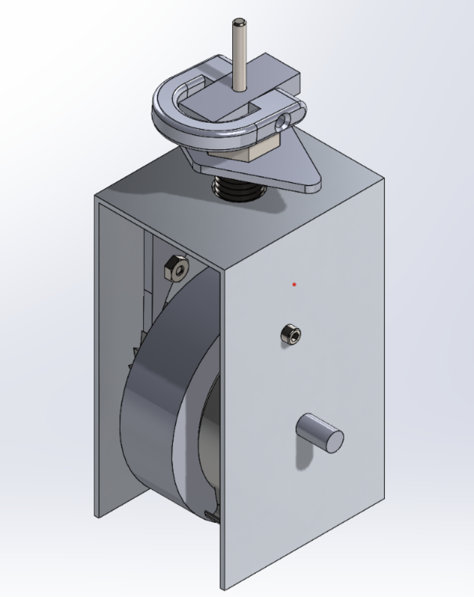
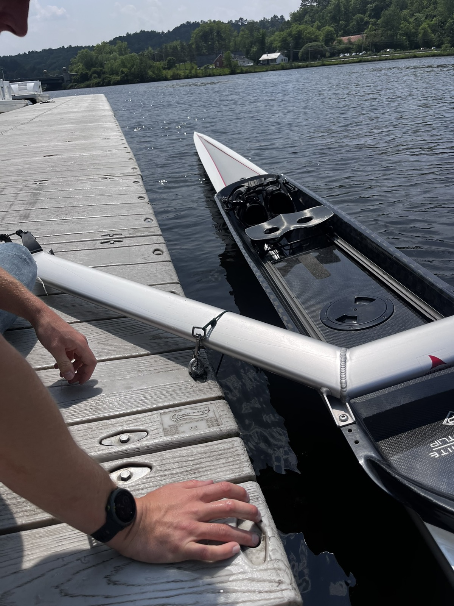

Port-A-Dock
An auto-locking strap to keep boats from floating away from the dock.
Overview
As a group of rowers on the design team, we'd all dealt with boats drifting off the dock between uses. For ENGS 75, Dartmouth's product design course, we designed Port-A-Dock: a strapping mechanism that secures boats to a dock so they can't float away, with an auto-locking feature that needs almost no thought or effort from the person tying up.
Approach
We iterated through several strap and locking geometries in CAD before landing on a design that could be rigged one-handed and would auto-lock under load without extra steps. We built physical prototypes and tested them directly on the dock with real boats, which surfaced usability issues that CAD alone never would have caught.
Gallery



Results
A working prototype that reliably held boats against the dock and auto-locked with minimal user interaction, validated through direct on-water testing.